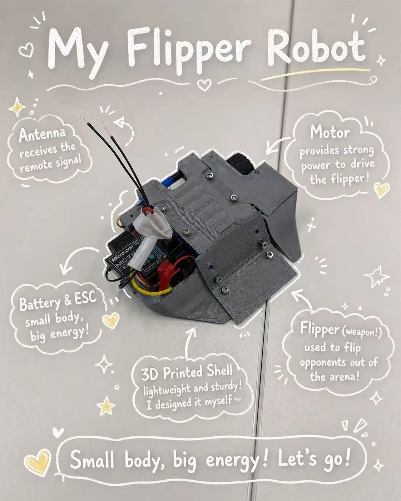
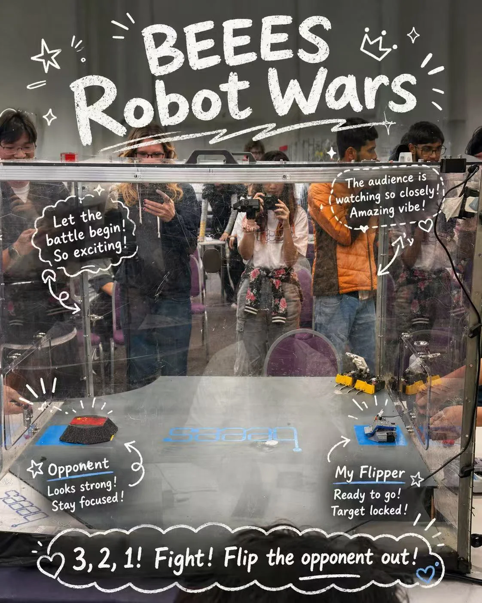

Project 02
Flipper Robot,
Built to Fight.
A University of Bristol BEEES Robot Wars project where I worked on model development, 3D-printed structure, physical assembly, and competition preparation for a compact flipper robot.

Final flipper robot: 3D-printed shell, exposed wiring, receiver antenna, battery/ESC packaging, drive motor, and front flipper weapon.
Interactive model
150g Flipper Assembly
Drag to rotate. Scroll or pinch to zoom.
Build story
From CAD model to fight-ready robot
Define the fighting concept.
The robot uses a front flipper as the active weapon. The core design problem was packaging drive, battery, ESC, receiver, wiring, and the flipper structure inside a very compact body.
Model, print, and adjust.
I worked on model development and 3D-printable structure, then used physical assembly feedback to understand clearances, screw access, wall thickness, stiffness, and part fit.
Assemble under real constraints.
The final build made the tradeoffs visible: the robot needed to stay small, keep enough structural strength, protect electronics, and still leave serviceable access for wiring and maintenance.
Test it in competition.
The BEEES Robot Wars arena turned the build into a real test: impact, reliability, weapon timing, driving control, and quick diagnosis mattered more than a clean CAD model alone.
Build in context
Small body, real arena

Learning outcomes
What this project demonstrates
Mechanical packaging under constraints
The project trained me to think beyond the outer shape: every screw, wire, receiver, battery, motor, and printed wall had to fit inside a small combat robot.
- Clearance and access for assembly, wiring, and maintenance.
- Balancing compactness, structural strength, and component protection.
- Understanding how CAD assumptions change after physical assembly.
Rapid prototyping and fabrication thinking
3D printing made design decisions immediately testable. I learned to treat modelling, fabrication, and assembly as one loop instead of separate tasks.
- Designing parts with printability and material behaviour in mind.
- Using assembled hardware to reveal problems that CAD cannot show clearly.
- Building confidence in moving from digital model to working object.
Competition feedback and engineering judgement
The competition environment turned the robot into a live engineering test, where reliability, control, repairability, and iteration speed became part of the design evaluation.
- Seeing how design choices behave under impact and pressure.
- Learning to diagnose problems quickly with limited time.
- Connecting mechanical design with electronics, control, and teamwork.